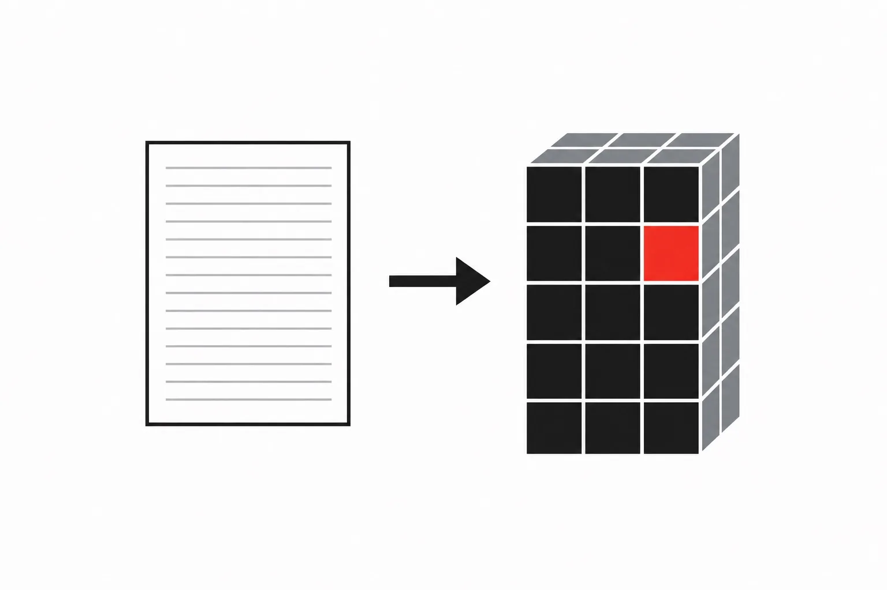

Nix
Nix from First Principles — Reproducible Builds, Development Environments, and Declarative Systems
One question runs through every page: how does a description of a thing become a real thing you can run?

An International-style graphic: flat geometric shapes on a white field, black and grays with one Swiss-red accent, strict alignment and generous whitespace. Reductive and rational — a diagrammatic image, no shadows, no gradients, no ornament. Subject: a single sheet of ruled paper at left, an arrow, and a solid block at right built from stacked identical squares, one square in red, suggesting a written description becoming a built thing. No text baked in. Target size ~1200×800px, 3:2 landscape; it is letterboxed into a 3:2 box, so keep the subject centred with safe margins.
Generate this with your image agent, then drop the file here.
Contents
- 01Why the Same Thing Works on One Computer and Not AnotherThe Problem with Software Environments
- 02Who Does What: The Many Parts With Nix in Their NameA Map of the Nix Ecosystem
- 03Try It Now, Keep NothingYour First Encounter with Nix
- 04The Big Room Where Every Thing Gets Its Own ShelfThe Nix Store: Software Without a Global Installation Directory
- 05Reading the Words Nix Is Written InLearning the Nix Expression Language
- 06Little Machines That Take Things In and Give Things BackFunctions, Scope, and Composition
- 07Doing Work Only When Someone AsksLaziness, Recursion, and Evaluation
- 08The Paper That Says How to Make a ThingDerivations: Describing a Build
- 09From Paper to Thing: Every Step on the WayThe Build Lifecycle
- 10Making Real Programs With the Shared Recipe BoxPackaging Software with Nixpkgs
- 11Changing Someone Else's Recipe Without Ruining ItComposing and Customizing Packages
- 12One Work Room for Everyone on the TeamReproducible Development Environments
- 13The Box With a Label on Every SideFlakes: A Standard Interface for Nix Projects
- 14Making Real Programs People Can UsePackaging Real Applications
- 15Letting a Machine Check Your Work, Again and AgainTesting, CI, and Binary Caches
- 16Filling Out a Form That Builds a Whole SetupThe Module System
- 17Making Your Own Computer Feel Like HomeManaging a User Environment
- 18A Whole Computer Built From a Page of WordsNixOS: Building a System from Configuration
- 19Sharing Parts Between Many ComputersReusable Services and Multiple Machines
- 20Finding What Went Wrong, Step by StepDebugging Nix Systematically
- 21Putting It All Together: From Files to a Running ServiceCapstone: From Repository to Running Service
- 22Learning From Others' Work and Adding Your OwnReading and Contributing to the Ecosystem
- ★The One-Page Helper SheetCheatsheet